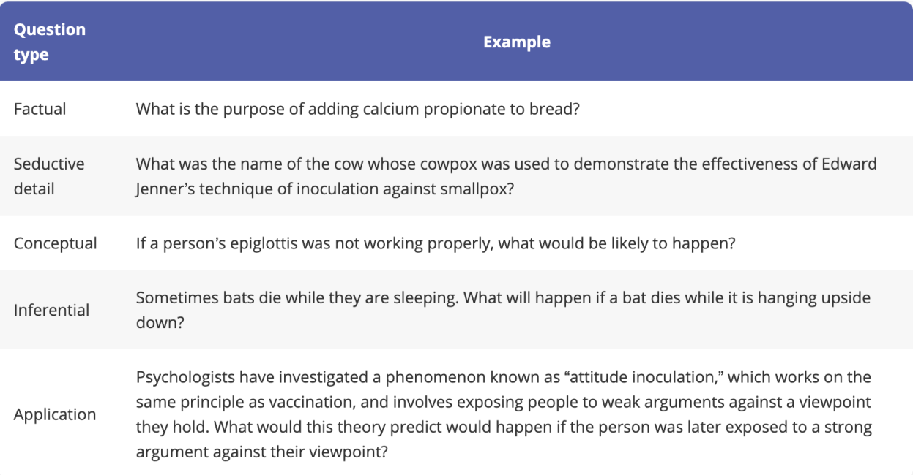
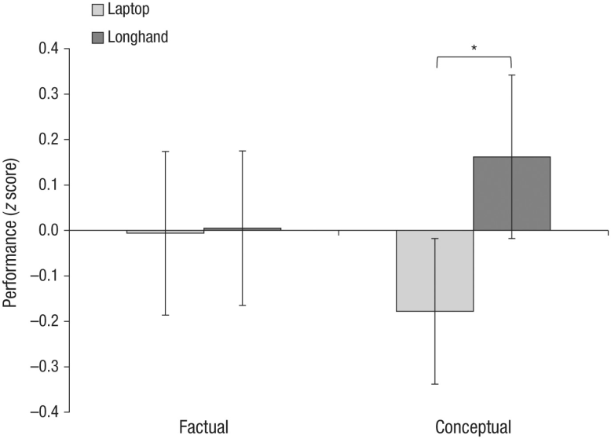
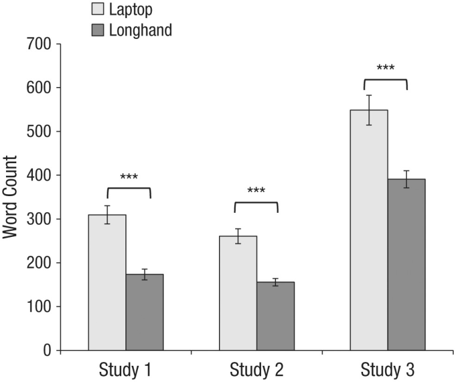
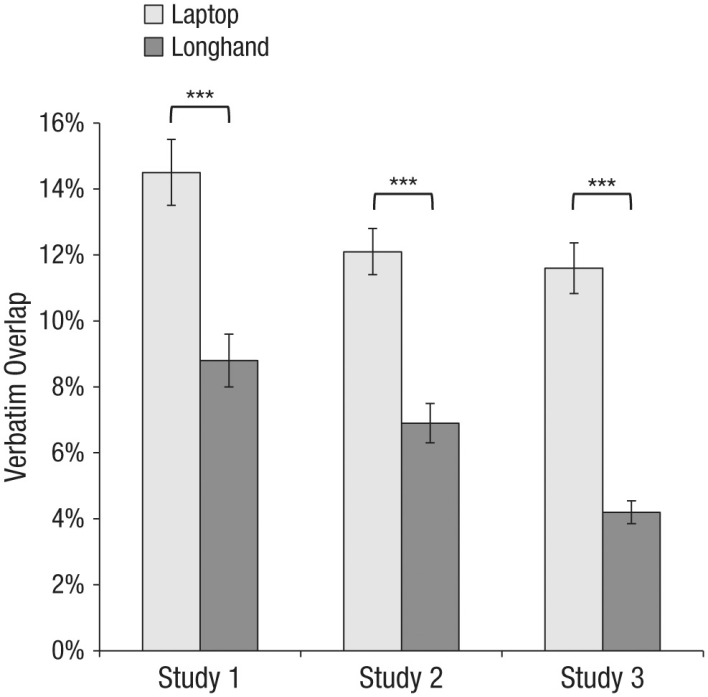
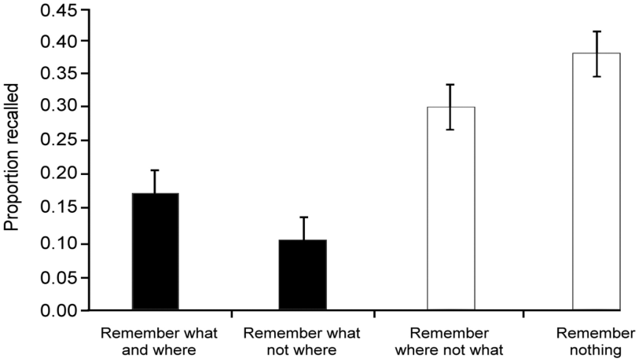

Abstract
Artificial intelligence (AI) has rapidly expanded across daily life and professional settings, from healthcare and criminal justice to transportation and education. In schools, students increasingly use AI for writing, problem-solving, and completing coursework. While AI can provide efficient support, this paper argues that over-reliance on AI can weaken students’ critical thinking and decision-making abilities over time. Drawing on research about laptop note-taking, media multitasking, memory externalization, and AI trust effects, this analysis shows that convenience-driven AI usage often shifts students away from understanding and toward mere task completion. The findings suggest that educational systems should prioritize AI literacy, emphasize process-based learning, and help students use AI as a supplement rather than a substitute for cognitive effort. Preserving cognitive and decision-making skills is essential, as today’s students will become tomorrow’s professionals.
Rise of Artificial Intelligence in Today’s Society and Schools
Integration of AI in Daily Life
Today, AI is increasingly embedded in major social institutions and everyday life. In healthcare, AI supports medical imaging and has been used to identify small lesions and lymph nodes. AI has also been applied to congestive heart failure care by predicting patient challenges in advance and helping allocate resources toward education and intervention. In criminal justice, some jurisdictions, including Chicago, have employed strategic subject lists to estimate who may be at higher risk of future violent offending. In transportation, AI-driven light detection and ranging systems have been used to improve driving safety and reduce crash risk. Beyond institutional use, AI now appears in homes, digital assistants, and self-driving technologies. The pace of adoption over the last several years has been rapid enough to make AI dependency seem normal.
Usage of AI by Students
AI use has also become increasingly common in education. Survey findings indicate that 56% of college students reported using AI on assignments and exams, while 53% reported having coursework that explicitly required AI usage (Nam, 2023). Reported use is even higher among Generation Z students than among millennials, with 62% versus 52% respectively (Nam, 2023). These figures suggest growing institutional and student-level dependence on AI tools. The key issue is not simply access to AI, but the way students use it: many turn to AI for direct answers rather than for understanding methods or concepts. As this pattern becomes more normalized, students risk replacing cognitive engagement with answer retrieval.
Risks of Over-Reliance on Artificial Intelligence
Evidence About AI Risks
Over-reliance on AI can negatively affect cognitive depth, especially when learning shifts toward passive intake. In a Princeton study of 67 students, participants were either assigned to take handwritten notes or typed notes on laptops. Afterward, they answered either factual-recall or conceptual questions (Mueller & Oppenheimer, 2014).

The results showed no significant difference between groups on factual questions, but students who took handwritten notes performed significantly better on conceptual questions. This suggests that longhand note-taking may support deeper processing and more flexible application of knowledge.

Additional findings showed that laptop notes contained significantly more words overall, indicating that students typed larger amounts of content, often in transcription-like form.

Laptop notes also demonstrated higher verbatim overlap with lecture wording, reinforcing the idea that typed notes can encourage copying over processing.

This dynamic parallels AI use in school settings: when students prioritize output capture over active processing, conceptual understanding may weaken. Related research on media multitasking further suggests that heavy digital media users are more susceptible to irrelevant distractions and interference, which may impair attention and cognitive control (Ophir et al., 2009; Firth et al., 2019). Because frequent AI use typically occurs within high-distraction digital environments, over-reliance may further contribute to reduced sustained attention.
Task Completion vs. Genuinely Understanding the Material
A major risk of AI overuse is that students may become focused on finishing tasks rather than mastering concepts. Research on memory externalization found that when people expected information to be externally available, they remembered where to find the information better than the information itself (Sparrow et al., 2011). This pattern helps explain why students using AI for immediate answers may retain less conceptual content.

When AI becomes the default first step, learning can shift from internal understanding to external dependence, with students prioritizing access over memory and reasoning.
Effects on Decision-Making Abilities
Over-reliance on AI also affects decision-making. Recent findings indicate that higher reliance on AI recommendations can increase acceptance errors, where users trust recommendations without sufficient critical evaluation (Zhai et al., 2024). As users become habituated to AI authority, they may reduce independent judgment and become less likely to challenge incorrect outputs. This pattern can deteriorate decision quality over time, particularly in ambiguous or high-stakes contexts where evaluation and skepticism are essential.
Addressing Objections and Future Solutions
Addressing Common Misconceptions About AI
AI clearly offers educational benefits, including quick explanations and structured step-by-step support. However, those benefits do not eliminate cognitive risks when usage habits prioritize shortcuts. If students primarily seek final answers, they may internalize less and rely increasingly on retrieval rather than understanding (Sparrow et al., 2011). Another common misconception is that AI itself is inherently harmful. The more accurate conclusion is that harm depends on usage patterns and educational context. Many institutions have not yet established effective AI literacy instruction, and many teachers are still adapting to the technology (Ng et al., 2023). As a result, students often receive access to AI tools without sufficient guidance on cognitively productive use.
A further objection is that AI can effectively replace human teaching. Yet research on communication and pedagogy indicates that human interaction remains especially important for developing critical reasoning, emotional engagement, and nuanced interpretation (Matei, 2013). AI can support instruction, but it cannot fully substitute the relational and interpretive strengths of human educators.
Importance of Critical Thinking Preservation
As AI adoption accelerates, preserving critical thinking and decision-making skills should be a central educational priority. Schools can better balance AI’s benefits and risks by implementing practical AI literacy initiatives that teach students when and how to use AI appropriately. Instruction should emphasize process-based learning, requiring students to explain reasoning, compare alternatives, and defend conclusions rather than only submit final outputs. AI should be framed as a supplementary study aid, not a replacement for core learning methods such as reading, discussion, note synthesis, and independent problem-solving.
Additional interventions include school-based information sessions on cognitive risks, ethics frameworks for responsible AI use, and periodic risk assessments of student dependency patterns. Together, these strategies can help students gain the productivity benefits of AI while maintaining the intellectual habits necessary for long-term academic and professional success.
Conclusion
AI has become a powerful part of modern education, but convenience can come with cognitive trade-offs. The evidence reviewed here supports the claim that over-reliance on AI may weaken students’ conceptual learning, attention, and independent decision-making when students prioritize rapid completion over understanding. The challenge is not to reject AI, but to use it in ways that preserve thought. If schools pair AI access with clear literacy training, process-focused assignments, and sustained human teaching, students can benefit from AI without sacrificing the cognitive skills they will need throughout their professional lives.
References
- Firth, J., Torous, J., Stubbs, B., Firth, J. A., Steiner, G. Z., Smith, L., ... & Sarris, J. (2019). The “online brain”: How the Internet may be changing our cognition. World Psychiatry, 18(2), 119–129.
- Matei, S. A. (2013). Can we teach better with machines? Human communication as a challenge to AI-based educational technologies. International Journal of Communication, 7, 24.
- Mueller, P. A., & Oppenheimer, D. M. (2014). The pen is mightier than the keyboard: Advantages of longhand over laptop note taking. Psychological Science, 25(6), 1159–1168.
- Nam, J. (2023). New survey reveals AI use among college students. BestColleges. https://www.bestcolleges.com/research/most-college-students-have-used-ai-survey/
- Ng, D. T. K., Leung, J. K. L., Chu, S. K. W., & Qiao, M. S. (2023). AI literacy: Definition, teaching, evaluation and ethical issues. Computers and Education: Artificial Intelligence, 4, 100134.
- Ophir, E., Nass, C., & Wagner, A. D. (2009). Cognitive control in media multitaskers. Proceedings of the National Academy of Sciences, 106(37), 15583–15587.
- Sparrow, B., Liu, J., & Wegner, D. M. (2011). Google effects on memory: Cognitive consequences of having information at our fingertips. Science, 333(6043), 776–778.
- Zhai, X., Wibowo, S., Li, M., & Chiong, R. (2024). Trust and over-reliance in AI-assisted decision-making: A systematic review. Computers in Human Behavior Reports, 15, 100456.